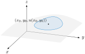

What is the Laplace operator and how does it relate to divergence?
What does the Laplacian of temperature tell us?
The gradient \(\nabla u\) of any function \(u(x,y)\) is a vector field that points in the direction of steepest ascent. That, is at each order pair \((x,y)\) in the domain of \(u\text{,}\) the vector \(\nabla u\) points in the direction in which we should travel in order to increase the output of \(u\) at the greatest rate. In a gradient vector field, as shown in Figure 6.6.1, we see that maxima of \(u\) correspond to sinks in the gradient field \(\nabla u\) and minima of \(u\) correspond to sources in \(\nabla u\text{.}\)
Figure6.6.1.A gradient vector field \(\nabla u\) for a scalar function \(u(x,y)\) having two sinks and two sources.
Divergence at a location \((x,y)\) in any vector field \(\vec{F}\) measures how much it locally behaves like a sink or a source. In other words, how much is it spreading out or how much is it contracting inward. When \(div \ \vec{F}(x,y) \gt 0\text{,}\) the location \((x,y)\) behaves like a source. Similarly, \(div \ \vec{F}(x,y) \lt 0\) tells us that \((x,y)\) behaves like a sink.
We now combine these two operations on a scalar function \(u(x,y)\) by first taking the gradient of \(u\text{,}\)\(\nabla u\text{,}\) and then taking the divergence of the gradient, \(\nabla \cdot \nabla u\text{.}\) The resulting value is called the Laplacian of \(u(x,y)\text{.}\) The Laplacian will be positive near a minimum of \(u\) and negative near a maximum.
so the expression \(\nabla \cdot \nabla u\) will involve differentiation twice. So, before exploring the scalar field \(\nabla \cdot \nabla u\) in greater depth, we first investigate second-order partial derivatives.
Second-Order Partial Derivatives.
Recall that for a single-variable function \(f\text{,}\) the second derivative of \(f\) is defined to be the derivative of the first derivative. That is, \(f''(x) = \frac{d}{dx}[f'(x)]\text{,}\) which can be stated in terms of the limit definition of the derivative by writing
A function \(f\) of two independent variables \(x\) and \(y\) has two first-order partial derivatives, \(\frac{\partial f}{\partial x}\) and \(\frac{\partial f}{\partial y}\text{.}\) Each of these first-order partial derivatives has two partial derivatives, giving a total of four second-order partial derivatives:
In what follows, we begin exploring the four different second-order partial derivatives of a function of two variables and seek to understand what these various derivatives tell us about the function’s behavior.
Recall from single variable calculus that the second derivative measures the instantaneous rate of change of the derivative. This observation is the key to understanding the meaning of the second-order partial derivatives.
Furthermore, we remember that the second derivative of a function at a point provides us with information about the concavity of the function at that point. Since the unmixed second-order partial derivative \(\frac{\partial^2 f}{\partial x^2}\) requires us to hold \(y\) constant and differentiate twice with respect to \(x\text{,}\) we may simply view \(\frac{\partial^2 f}{\partial x^2}\) as the second derivative of a trace of \(f\) where \(y\) is fixed. As such, \(\frac{\partial^2 f}{\partial x^2}\) will measure the concavity of this trace.
Figure6.6.2.The tangent lines to a trace with increasing \(x\text{.}\)
Consider, for example, \(f(x,y) = \sin(x) e^{-y}\text{.}\)Figure 6.6.2 shows the graph of this function along with the trace given by \(y=-1.5\text{.}\) Also shown are three tangent lines to this trace, with increasing \(x\)-values from left to right among the three plots in Figure 6.6.2.
That the slope of the tangent line is decreasing as \(x\) increases is reflected, as it is in one-variable calculus, in the fact that the trace is concave down at \((1.75,-1.5)\text{.}\) Indeed, we see that \(\frac{\partial f}{\partial x}(x,y)=\cos(x)e^{-y}\) and so \(\frac{\partial^2 f}{\partial x^2}(x,y)=-\sin(x)e^{-y} \text{.}\) From here, we see that \(\frac{\partial^2 f}{\partial x^2}(1.75,-1.5) \lt 0\) as expected.
In Figure 6.6.4, we see the trace of \(f(x,y) = \sin(x) e^{-y}\) that has \(x\) held constant with \(x = 1.75\text{.}\) We also see three different lines that are tangent to the trace of \(f\) in the \(y\) direction at values of \(y\) that are increasing from left to right in the figure.
Figure6.6.4.The tangent lines to a trace with increasing \(y\text{.}\)
The slope of the tangent lines to the trace \(x=1.75\) increases (becomes less negative) as \(y\) increases. This suggests that \(\frac{\partial^2 f}{\partial y^2}\) will be positive at \((1.75,-1.5)\text{.}\) Indeed, we have \(\frac{\partial^2 f}{\partial y^2}(x,y) = \frac{\partial}{\partial y} \left( -\sin(x)e^{-y}\right) = \sin(x)e^{-y}\) so that \(\frac{\partial^2 f}{\partial y^2}(1.75,-1.5) = \sin(1.75)e^{1.5} \gt 0\) and this trace is concave up at \((1.75,-1.5)\) as expected.
Example6.6.5.Wind Chill.
The wind chill \(C(v,T)\text{,}\) in degrees Fahrenheit, is a function of the wind speed \(v\text{,}\) in miles per hour, and the air temperature \(T\text{,}\) in degrees Fahrenheit. Some values of the wind chill are recorded in Table 6.6.6.
Table6.6.6.Wind chill \(C\) as a function of wind speed \(v\) and temperature \(T\text{.}\)
\(v \backslash T\)
-30
-25
-20
-15
-10
-5
0
5
10
15
20
5
-46
-40
-34
-28
-22
-16
-11
-5
1
7
13
10
-53
-47
-41
-35
-28
-22
-16
-10
-4
3
9
15
-58
-51
-45
-39
-32
-26
-19
-13
-7
0
6
20
-61
-55
-48
-42
-35
-29
-22
-15
-9
-2
4
25
-64
-58
-51
-44
-37
-31
-24
-17
-11
-4
3
30
-67
-60
-53
-46
-39
-33
-26
-19
-12
-5
1
35
-69
-62
-55
-48
-41
-34
-27
-21
-14
-7
0
40
-71
-64
-57
-50
-43
-36
-29
-22
-15
-8
-1
To estimate the second-order partial \(\frac{\partial^2 C}{\partial v^2}(20,-10)\text{,}\) we need information about the first partial \(\frac{\partial C}{\partial v}\) near \(v=20, T=-10\text{.}\) From that information, we can then estimate the rate at which \(\frac{\partial C}{\partial v}\) changes as we change wind speed \(v\text{.}\) To that end, note that using central differences yields
What does this value tell us? It gives a rate of change of a rate of change. \(\frac{\partial C}{\partial v}\) tells us the rate at which the wind chill is changing as a small change in made in the wind speed. As we saw, these values were all negative as expected (as wind speed increases, the wind chill decreases...that is, it feels colder). In addition, we saw that as the wind speeds increase, the rate at which we feel colder is becoming less negative (i.e. it is increasing). This is why the second derivative \(\frac{\partial^2 C}{\partial v^2}(20,-10)\) is positive. The second derivative gives the rate at which this rate of change is changing. For every increase in wind speed by 1 mph, the rate at which the rate of the wind chill changes is roughly 0.03 degrees per mph. And this matches the values of \(\frac{\partial C}{\partial v}\) that we have calculated - as the wind speed goes from 15 mph to 25 mph (10 mph of change), the change in \(\frac{\partial C}{\partial v}\) is 0.7-0.4 = 0.3 degrees per mph.
Checkpoint6.6.7.Estimating and Interpreting a Second Partial of Wind Chill.
Using values of the wind chill found in Table 6.6.6, estimate the second-order partial \(\frac{\partial^2 C}{\partial T^2}(20,-10)\text{.}\) Then, interpret the meaning of this value.
Answer.
To estimate the second-order partial \(\frac{\partial^2 C}{\partial T^2}(20,-10)\text{,}\) collect information about the first partial \(\frac{\partial C}{\partial T}\text{.}\) We then estimate the rate at which \(\frac{\partial C}{\partial T}\) changes as we change temperature \(T\text{.}\) Central differences yield
We interpret this to mean that rate of change of the wind chill with respect to temperature changes (i.e. \(\frac{\partial C}{\partial T}\)) is roughly constant when \(v=20\) mph and \(T=-10^{\circ}F\text{.}\) Thinking visually, if we graphed \(C(v,T)\) and the trace \(v=20\text{,}\) the slopes to this trace near \(T=-10\) (as in Example 6.6.3) would all be the same.
Example6.6.8.Geometrically Understanding \(\frac{\partial^2 f}{\partial x \partial y}\).
Figure 6.6.9 helps in visualizing the mixed partial derivative, \(\frac{\partial^2 f}{\partial y \partial x}\text{.}\) Here, we first hold \(y\) constant to generate the first-order partial derivative \(\frac{\partial f}{\partial x}\text{,}\) and then we hold \(x\) constant to compute \(\frac{\partial^2 f}{\partial y \partial x}\text{.}\) This leads to first thinking about a trace with \(x\) being constant, followed by slopes of tangent lines in the \(x\)-direction that slide along the original trace. You might think of sliding your pencil down the trace with \(x\) constant in a way that its slope indicates \(\frac{\partial}{\partial y}\left( \frac{\partial f}{\partial x} \right)\) in order to further animate the three snapshots shown in Figure 6.6.9.
Figure6.6.9.The trace of \(z = f(x,y) = \sin(x)e^{-y}\) with \(x = 1.75\text{,}\) along with tangent lines in the \(y\)-direction at three different points.
Based on Figure 6.6.9, \(\frac{\partial}{\partial y}\left( \frac{\partial f}{\partial x} \right)(1.75, -1.5) \gt 0\) since the slopes shown are increasing (becoming less negative) as \(y\) increases. Algebraically, note that \(\frac{\partial^2 f}{\partial x \partial y} = \frac{\partial}{\partial y}\left( \frac{\partial f}{\partial x} \right) = \frac{\partial}{\partial y}\left( e^{-y}\sin(x)\right) = -e^{-y}\cos(x)\) which also gives a mixed derivative of \(-e^{1.5}\cos(1.75) \approx 0.8 \gt 0\) at \((1.75,-1.5)\text{.}\)
Checkpoint6.6.10.Geometrically Understanding \(\frac{\partial^2 f}{\partial y \partial x}\).
For \(f(x,y)=e^{-y}\sin(x)\text{,}\) determine a formula for \(\frac{\partial^2 f}{\partial y \partial x}\text{.}\) Use it to evaluate \(\frac{\partial^2 f}{\partial y \partial x}(1.75,-1.5)\text{.}\) Then, compare the result to Example 6.6.8.
we have \(\frac{\partial^2 f}{\partial y \partial x}(1.75,-1.5) = -e^{1.5}\cos(1.75) \approx 0.8\text{.}\) This is exactly the same value as \(\frac{\partial^2 f}{\partial x \partial y}(1.75,-1.5)\) found in Example 6.6.8.
In Checkpoint 6.6.10, you may have noticed that the mixed second-order partial derivatives are equal. This observation holds generally and is known as Clairaut’s Theorem.
Clairaut’s Theorem.
Let \(f\) be a function of several variables for which the partial derivatives \(\frac{\partial^2 f}{\partial x \partial y}\) and \(\frac{\partial^2 f}{\partial y \partial x}\) are continuous near the point \((a,b)\text{.}\) Then
\begin{equation*}
\frac{\partial^2 f}{\partial x \partial y}(a,b) = \frac{\partial^2 f}{\partial y \partial x}(a,b).
\end{equation*}
The Laplacian Operator.
As mentioned earlier, for a scalar function \(u(x,y,z)\text{,}\) we have interest in the divergence of the gradient field. But
Example6.6.11.Minimum Temperature and the Laplacian.
For a location \((x_0, y_0, z_0)\) at which temperature \(T(x,y,z)\) is a minimum, the slope of \(T\) increases in all directions. That is, \(\frac{\partial T}{\partial x}\text{,}\)\(\frac{\partial T}{\partial y}\text{,}\) and \(\frac{\partial T}{\partial z}\) all increase as we move away from \((x_0, y_0, z_0)\text{.}\) This means that \(\Delta T = \nabla^2 T = \frac{\partial^2 T}{\partial x^2} + \frac{\partial^2 T}{\partial y^2} + \frac{\partial^2 T}{\partial z^2} \gt 0\) at \((x_0,y_0,z_0)\text{.}\) Similarly, \(\Delta T \lt 0\) at a location where the temperature is at a local maximum.
Example6.6.12.Lapse Rate.
In the atmosphere, the temperature \(T(x,y,z)\) varies far more vertically than it does horizontally. The vertical change, known as the lapse rate, is highly variable but is often between \(4^{\circ}C\) and \(10^{\circ}C\) for every kilometer that \(z\) increases. On the other hand, moving north or east by one kilometer is quite unlikely to cause such a dramatic change in temperature. The fact that the variability of \(\frac{\partial T}{\partial z}\) is much larger than the variability of \(\frac{\partial T}{\partial x}\) or \(\frac{\partial T}{\partial y}\text{,}\) suggests that the Laplacian \(\Delta T = \frac{\partial^2 T}{\partial x^2} + \frac{\partial^2 T}{\partial y^2} + \frac{\partial^2 T}{\partial z^2} \approx \frac{\partial^2 T}{\partial z^2}\text{.}\)
The Laplacian of a function \(u(x,y)\) tells us about the curvature of the graph. To better understand how, let’s look at the one-dimensional case. For a function \(u(x)\) of one variable, \(\Delta u = \frac{d^2 u}{dx^2}\text{.}\) In calculus we learned that the second derivative \(u''(x)\) of a function indicates concavity. When \(u'' \gt 0\text{,}\) the function is concave up; when \(u'' \gt 0\text{,}\) the function is concave down. Another way to view this is to compare the value of \(u(x_0)\) to nearby values. As Figure 6.6.13 illustrates, when \(u\) is concave up near \(x_0\) we have \(u''(x_0) \gt 0\text{.}\) But we also notice that when \(u\) is concave up we have \(u(x_0)\) is less than the average of nearby values of \(u\text{.}\)
Figure6.6.13.A function \(u(x)\) that is concave up. The average value of \(u\) near \(x_0\) is greater than the value \(u(x_0)\text{.}\)
Just as \(u'' \gt 0\) tells us that the average value of \(u(x)\) near a point \(x_0\) is greater than \(u(x_0)\text{,}\) we can say something similar for functions of more than one variable. In particular, \(\Delta u \gt 0\) tells us that the average value of \(u\) near a point will be greater than the value of \(u\) at that point.
Example6.6.14.The Laplacian and Average Values Near a Point.
has \(\frac{\partial u}{\partial x} = -e^{-x}\sin(y)\) and \(\frac{\partial u}{\partial y} = e^{-x}\cos(y)\text{.}\) So, \(\frac{\partial^2 u}{\partial x^2} = e^{-x}\sin(y)\) and \(\frac{\partial^2 u}{\partial y^2} = -e^{-x}\sin(y)\text{.}\) It follows that the Laplacian is zero:
We interpret this to mean that near any point \((x_0,y_0,u(x_0,y_0))\) on the graph of \(u(x,y)\text{,}\) the average value of \(u(x,y)\) is equal to the value \(u(x_0,y_0)\text{.}\)

Figure6.6.15.The function \(u(x,y)=1+e^{-x}\sin(y)\) has Laplacian \(\Delta u = 0\text{.}\) Thus, the average value of \(u\) near \((x_0,y_0)\) is equal to the value \(u(x_0,y_0)\text{.}\)
The vector field \(\nabla u(x,y)\) for \(u(x,y)=1+e^{-x}\sin(y)\) is divergence-free (sometimes also called solenoidal). There are no sources or sinks (see Figure 6.6.16). The interested reader should try plotting this function over various domains. They will find the graph of \(u\) has no maxima or minima and the gradient vector field \(\nabla u\) has no sources or sinks.
Figure6.6.16.If \(u(x,y)=1+e^{-x}\sin(y)\text{,}\) the gradient vector field \(\nabla u\) has no sources or sinks. That is, \(\Delta u = div \ (\nabla u) = 0\) everywhere.
Example6.6.17.
The graph of \(u(x,y)=e^{-\frac{1}{3}x^3+x-y^2}\) appears in Figure 6.6.18. We have
\begin{equation*}
\nabla u = (-x^2+1)e^{-\frac{1}{3}x^3+x-y^2} \vec{i} -2ye^{-\frac{1}{3}x^3+x-y^2}\vec{j}.
\end{equation*}
At \((1,0.5)\text{,}\) we then find \(\Delta u(1,0.5) \lt 0\text{.}\) From this we conclude that the average value of \(u\) near \((1,0.5)\) is less than the value of \(u\) at \((1,0.5)\text{.}\) Note that the gradient vector field \(\nabla u\) has a sink nearby at \((1,0)\text{.}\) So it makes sense that the divergence of this gradient vector field would be negative at \((1,0.5)\text{.}\)
Figure6.6.18.If \(u(x,y)=e^{-\frac{1}{3}x^3+x-y^2}\text{,}\) the gradient vector field \(\nabla u\) has a sink at \((1,0)\) corresponding to the maximum on the graph. Here, \(\Delta u(1,0.5) = \nabla \ (\nabla u)(1,0.5) \lt 0\) and the average value of \(u\) near \((1,0.5)\) is less than the value of \(u(1.0.5)\text{.}\)
Example6.6.19.Estimating the Laplacian.
Temperatures near Rochester, MN are given in Figure 6.6.20. From this information, we can estimate the Laplacian at Rochester, \(\Delta T({\rm{Rochester}})\text{.}\)
Figure6.6.20.Temperatures near Rochester, MN. Hammond is 35 km north of Rochester. Stewartville is 21 km south of Rochester. Owatonna is 66 km west of Rochester. Winona is 87 km east of Rochester.
This means that the temperature \(T\) at Rochester is less than the average local temperature which in this case we can estimate to be \(\frac{1}{4}(9.1+8.7+8.5+8.2) = 8.625 ^{\circ}C\text{.}\) Even with no wind acting, we would then expect Rochester to warm.
ExercisesExercises
1.Second-order Partials of a Polynomial.
2.Evaluating a Second-order Partials of a Polynomial.
3.Signs of Partials using Contours.
4.Compute The Laplacian.
5.Partial Derivatives using the Chain Rule.
Find all the first and second-order partial derivatives of \(f(x,y)=3\sin(2x+y)-4\cos(x-y)\text{.}\) Using Clairaut’s Theorem, you will find five unique expressions.
Compute \(\frac{\partial^3 f}{\partial z \partial y \partial x}\) if \(f(x,y,z) = x(9y^4 - z^5)\text{.}\)
Answer.
We have \(\frac{\partial f}{\partial x} = 9y^4 - z^5\text{.}\) So, \(\frac{\partial}{\partial y} \left( \frac{\partial f}{\partial x}\right) = 36y^3\text{.}\) So, \(\frac{\partial^3 f}{\partial z \partial y \partial x} = \frac{\partial}{\partial z} \left( \frac{\partial^2 f}{\partial y \partial x} \right) = \frac{\partial}{\partial z} \left( 36y^3 \right) = 0\text{.}\)
7.Units for Second-order Partials.
Let \(f(x,y) = \frac{1}{2}xy^2\) represent the kinetic energy in joules of an object of mass \(x\) in kilograms with velocity \(y\) in meters per second. Determine the units associated with \(\frac{\partial^2 f}{\partial x^2}\text{,}\)\(\frac{\partial^2 f}{\partial y^2}\text{,}\) and \(\frac{\partial^2 f}{\partial y \partial x}\) respectively.
Answer.
\(\frac{\partial^2 f}{\partial x^2}\) will have units of joules per kilogram squared (\(\frac{J}{kg^2}\)). \(\frac{\partial^2 f}{\partial y^2}\) will have units of \(\frac{J}{(m/s)^2} = \frac{J \cdot s^2}{m^2}\text{.}\) The mixed partial \(\frac{\partial^2 f}{\partial y \partial x}\) will have units of \(\frac{J \cdot s}{m \cdot kg}\text{.}\)
8.Estimating Second Partials from a Contour Diagram.
Shown in Figure 6.6.21 is a contour plot of a function \(f\) with the values of \(f\) labeled on the contours. The point \((2,1)\) is highlighted in red.
Figure6.6.21.A contour plot of \(f(x,y)\text{.}\)
Estimate the partial derivatives \(\frac{\partial f}{\partial x}(2,1)\) and \(\frac{\partial f}{\partial y}(2,1)\text{.}\)
Determine whether the second-order partial derivative \(\frac{\partial^2 f}{\partial x^2}(2,1)\) is positive or negative, and explain your thinking.
Determine whether the second-order partial derivative \(\frac{\partial^2 f}{\partial y^2}(2,1)\) is positive or negative, and explain your thinking.
Determine whether the second-order partial derivative \(\frac{\partial^2 f}{\partial y \partial x}(2,1)\) is positive or negative, and explain your thinking.
Determine whether the second-order partial derivative \(\frac{\partial^2 f}{\partial x \partial y}(2,1)\) is positive or negative, and explain your thinking.
Consider a function \(g\) of the variables \(x\) and \(y\) for which \(\frac{\partial g}{\partial x}(2,2) \gt 0\) and \(\frac{\partial^2 g}{\partial x^2}(2,2) \lt 0\text{.}\) Sketch possible behavior of some contours around \((2,2)\) on the left axes in Figure 6.6.22.
Figure6.6.22.Plots for contours of \(g\) and \(h\text{.}\)
Consider a function \(h\) of the variables \(x\) and \(y\) for which \(\frac{\partial h}{\partial x}(2,2) \gt 0\) and \(\frac{\partial^2 h}{\partial y \partial x}(2,2) \lt 0\text{.}\) Sketch possible behavior of some contour lines around \((2,2)\) on the right axes in Figure 6.6.22.
9.Heat Index.
The Heat Index, \(I\text{,}\) (measured in apparent degrees Fahrenheit) is a function of the actual temperature \(T\) outside (in degrees Fahrenheit) and the relative humidity \(H\) (measured as a percentage). A portion of the table which gives values for this function, \(I(T,H)\text{,}\) is reproduced in Table 6.6.23.
Table6.6.23.Heat index.
T\(\downarrow \backslash\)H\(\rightarrow\)
70
75
80
85
90
106
109
112
115
92
112
115
119
123
94
118
122
127
132
96
125
130
135
141
Estimate \(\frac{\partial^2 I}{\partial T^2}(94,75)\text{.}\) Then, write a complete sentence that carefully explains the meaning of this value, including units.
Estimate \(\frac{\partial^2 I}{\partial H^2}(94,75)\text{,}\) and write one complete sentence that carefully explains the meaning of this value, including units.
Finally, do likewise to estimate \(\frac{\partial^2 I}{\partial T \partial H}(94,75)\text{,}\) and write a sentence to explain the meaning of the value you found.
Answer.
First, we estimate \(\frac{\partial I}{\partial T}\) at two locations near \((94,75)\text{.}\) For example,
When the temperature is 94 degrees and the relative humidity is 75%, this value tells us how fast the rate of change of the heat index is increasing as temperature increases.
This time estimate \(\frac{\partial I}{\partial H}\) at two locations near \((94,75)\text{:}\)
When the temperature is 94 degrees and the relative humidity is 75%, this value tells us how fast the rate of change of the heat index is increasing as the relative humidity increases.
When the temperature is 94 degrees and the relative humidity is 75%, this value tells us how fast the rate of change of the heat index with respect to a change in humidity is increasing as the temperature increases.
10.Determining the Sign of the Laplacian.
The surface that is the graph of \(u(x,y)\) and the gradient vector field \(\nabla u\) are given in Figure 6.6.24. Is \(\Delta u(0.75,0)\) positive, negative, or zero? Why?
Figure6.6.24.The surface of the graph of \(u(x,y)\) together with the gradient vector field \(\nabla u\) for Exercise 6.6.10.
Answer.
Since the average value of \(u(x,y)\) near \((0.75,0)\) appears to be greater than the value of \(u(0.75,0)\text{,}\) we expect \(\Delta u(0.75,0) \gt 0\text{.}\) From the vector field, we can also see that \(div (\nabla u)(0.75,0)\) appears to be positive as flow is moving away from \((0.75,0)\text{.}\)
11.Units of the Laplacian.
The Laplacian \(\Delta = \nabla^2 = \frac{\partial}{\partial x^2} + \frac{\partial}{\partial y^2}+ \frac{\partial}{\partial z^2}\) is defined on a scalar vector field \(u\text{.}\) The input variables \(x, y\text{,}\) and/or \(z\) should be spatial variables with the same dimensions. In this way, units of \(\Delta u\) will make sense. For example, in computing \(\Delta C\) for the function \(C(v,T)\) given in Table 6.6.6, the units on each second partial will be different. What are the units for the second partials in \(\Delta C\text{?}\)
Answer.
The units of \(\frac{\partial^2 C}{\partial v^2}\) are \(\frac{^{\circ}F/{\rm{mph}}}{\rm{mph}}\text{.}\) The units of \(\frac{\partial^2 C}{\partial T^2}\) are \(\frac{^{\circ}F/{^{\circ}F}}{^{\circ}F}\text{.}\) These do not add to anything physically meaningful.
12.Discrete Laplacian on a Regular Grid.
Suppose that a scalar function such as temperature is known at locations on a regular grid. For example, suppose temperature \(f\) is measured at locations 1 unit away from and at a center location as in Figure 6.6.25.
Figure6.6.25.Temperatures \(f\) at locations \(A, B, C\) and \(D\) each 1 unit from \(E\) in a regular array.
Using forward differences to estimate first partial derivatives, and backward differences to estimate second-order partials, explain how the Laplacian at \(E\) can be estimated using
Using the result of Exercise 6.6.12, determine the sign of \(\Delta f\) when \(f\) is less than the average of the values nearby. What about if \(f\) is greater than the average of the values nearby?
Since the average of values nearby is \(\frac{1}{4}\left( f(A) + f(B) + f(C) + f(D) \right)\text{,}\) we see that when \(f\) is less than this average, we have
which means that \(\Delta f(E) \gt 0\text{.}\) Similarly, we see that \(\Delta f(E) \lt 0\) when \(f\) is greater than the average of the values nearby.
14.Laplacian of Temperature at Dubuque.
Figure 6.6.26 gives surface temperatures \(T(x,y)\) at various locations \((x,y)\) on March 26, 2023. Should one expect \(\Delta T({\rm{Dubuque}})\) to be positive, negative, or zero? Why?
Figure6.6.26.Surface temperatures in the midwest on March 23, 2023. (Source: NOAA).
Answer.
We expect \(\Delta T({\rm{Dubuque}}) \gt 0\) since the surface temperature at Dubuque appears to be less than the average of surrounding temperatures.